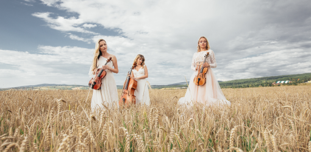

«Прежде всего, я знаю, что жизнь для фотографа не может быть безразлична. Мнение часто состоит из своего рода критики. Но критика может выйти из любви. Важно видеть то, что невидимо для других».
«Будь он художник или нет, фотограф радостный сластолюбец по той простой причине, что глаза имеют дело с чувствами, а не с мыслями»
«Я хочу, чтобы зрители переносились в жизнь тех людей, на которых они смотрят, визуальный опыт невероятно эмоционален»,
Lady Music
Music on my Mind
«Я начал понимать, что камера видит мир иначе, чем человеческий глаз и что иногда эти различия могут сделать фотографию более мощной, чем то, что вы действительно наблюдаете»
Music on my Mind
«Я начал понимать, что камера видит мир иначе, чем человеческий глаз и что иногда эти различия могут сделать фотографию более мощной, чем то, что вы действительно наблюдаете»
Music on my Mind
«Я начал понимать, что камера видит мир иначе, чем человеческий глаз и что иногда эти различия могут сделать фотографию более мощной, чем то, что вы действительно наблюдаете»
Look about Us

Как мы можем вам помочь?
1
Call Us
«Фотография – это искусство застывшего времени... возможность хранить эмоции и чувства внутри кадра
2
Call Us
«Фотография – это искусство застывшего времени... возможность хранить эмоции и чувства внутри кадра
3
Call Us
«Фотография – это искусство застывшего времени... возможность хранить эмоции и чувства внутри кадра
4
Call Us
«Фотография – это искусство застывшего времени... возможность хранить эмоции и чувства внутри кадра

«Будет время, когда вы окажетесь в поле без камеры. Тогда вы увидите самый великолепный закат или самую красивую сцену из всех, что когда-либо наблюдали. Не горюйте из-за того, что не можете его запечатлеть. Присядьте, впитайте его и наслаждайтесь им, тем, каков он есть!»
CONTACT: